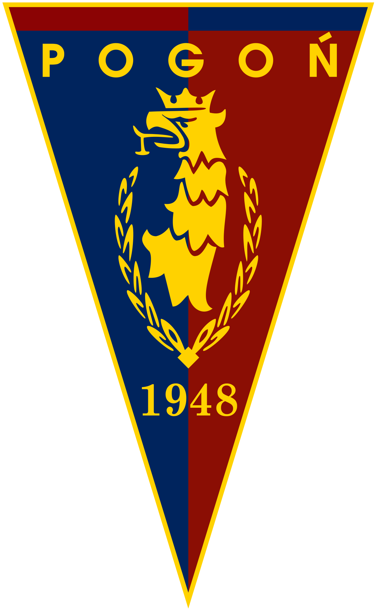

|
Najpopularniejszy klub sportowy w Szczecinie został założony 21 kwietnia 1948 roku pod nazwą Klub Sportowy Sztorm. Pierwszymi sekcjami były sekcje piłki nożnej i boksu. Drużynę piłkarzy zgłoszono do rozgrywek C-klasy, organizowanych przez Zachodniopomorski Okręgowy Związek Piłki Nożnej. Sztorm był objęty patronatem szczecińskich transportowców. |
|
|  |
Jesienią 1955 roku Kolejarz zmienił nazwę na Klub Sportowy Pogoń, nawiązując (również barwami) do tradycji Pogoni Lwów. W 1957 roku pod wodzą Floriana Krygiera zespół został wicemistrzem Ligi Międzywojewódzkiej i w turnieju barażowym o II ligę (Flota Gdynia, Warta Gorzów, Kujawiak Włocławek) zajął I miejsce, awansując po raz pierwszy do II ligi. Od razu, w 1958 roku Pogoń zajęła w grupie północnej I miejsce (37 punktów, stosunek bramek 54:22), co dało historyczny awans do I ligi. Zespół przez cały sezon nie przegrał żadnego ze spotkań i wyczyn ten nie został nigdy powtórzony na tym poziomie rozgrywek. |
| Powrót do strony głównej | |